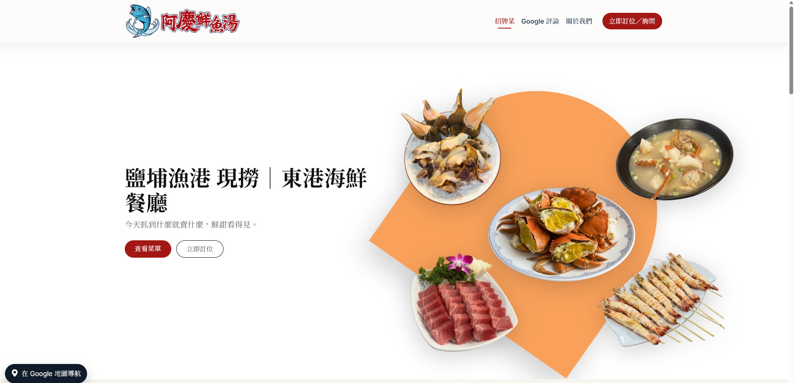
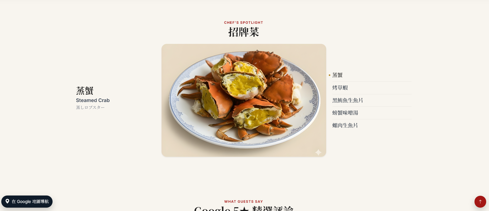

Aqing Seafood - A Website for a Local Taiwanese Restaurant
A clean, modern, and responsive (RWD) website designed to attract customers and provide key business information.
My Role & The Solution
I was responsible for the full project lifecycle, from initial design mockups to front-end development and deployment. I developed a responsive website that is easy for customers to navigate and took product photos for the restaurant. Key features include a product gallery, an integrated Google Map for directions, and clear contact information, which helped the business increase its local visibility. I also handle Google SEO to make the website ranked higher for people searching for local hidden gems.
Project Gallery
The homepage, featuring key products and contact info.
The product gallery page.
Technical Stack
- Technologies: HTML, CSS, JavaScript
- Design: Responsive Web Design, Mobile-First Approach